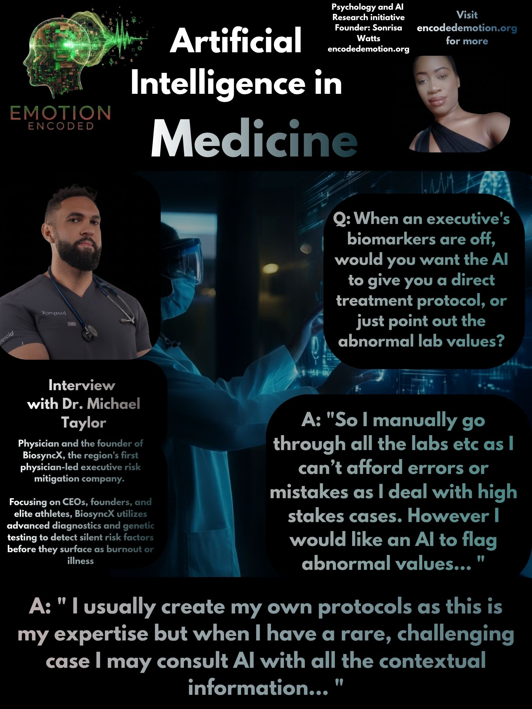

This brief looks at how advanced diagnostics, clinical expertise, and software tools fit together in executive longevity and risk mitigation, based on a talk with Dr. Michael Taylor.
Dr. Michael Taylor is a British-born physician and founder of BiosyncX, the region’s first physician-led executive risk mitigation company. His premise is that performance does not fail suddenly, but degrades quietly before showing up as burnout, illness, or a costly decision.
BiosyncX uses advanced diagnostics and genetic testing to catch silent risk factors in CEOs, founders, and elite athletes before they surface, a conviction earned from managing over 100,000 patients and clients in practice. He previously co-founded the Health & Nutrition Association of Trinidad and Tobago, leading over 40 health fairs in a single year, and co-hosted CNC3’s The Doctor’s Journal.
I first asked him if he uses any AI tools like ChatGPT or Gemini for any part of his work right now, to which he replied
"Yes I use a lot of AI tools. Claude, ChatGPT, perplexity, Gemini, grok to name a few."
This shows that forward-thinking clinicians actively integrate multiple large language models and search tools into their daily professional workflows. However, high-stakes environments demand strict boundaries: while AI serves as a powerful multi-model sounding board for rare or challenging cases, primary protocol design remains strictly human-led to eliminate error.
I asked 'When an executive's biomarkers are off, would you want the AI to give you a direct treatment protocol, or just point out the abnormal lab values?'
"So I manually go through all the labs etc as I can’t afford errors or mistakes as I deal with high stakes cases. However I would like an AI to flag abnormal values. I usually create my own protocols as this is my expertise but when I have a rare, challenging case I may consult AI with all the contextual information and see if it has additional insights that I may have glossed over or missed."
In executive longevity and risk management, mistakes carry massive professional and personal costs. While software can effectively flag out-of-range values and provide a second look for complex clinical puzzles, the final treatment plan must rely entirely on the physician's deep expertise and manual oversight.
I then asked 'Would you prefer an AI that automates your client intake notes, or one that tracks their physical recovery metrics?'
"I already have access to tech that tracks physical recovery metrics, and automation of intake notes."
Specialized operational software for tracking recovery and handling administrative charting is already standard in advanced practices. The focus is no longer on basic intake automation, but on deeper clinical decision support and predictive risk analysis.
The last question was, "When an algorithm spots an unexpected health anomaly, would you prefer it to immediately interrupt your workflow with an alert, or bundle it into your scheduled daily review?"
"Given the nature of the work I do, I would always want an immediate response or real-time action on any red flag as some situations are time sensitive and can result in either amazing outcomes if intervention is early or adverse events if delayed therapy."
Delaying critical red flags for later review introduces unacceptable risks in high-performance health management. Real-time alerting is non-negotiable when dealing with time-sensitive physiological anomalies, ensuring early intervention secures positive outcomes and prevents adverse events.
RESEARCH IMPLICATIONS FOR EMOTION ENCODED
The talk with Dr. Taylor shows that while clinicians embrace AI for flagging data and cross-checking complex scenarios across multiple models, executive protocols remain strictly human-led. Real-time tools must act as immediate safety nets for time-sensitive anomalies, balancing administrative automation with absolute clinical precision.
Sonrisa Watts // Emotion Encoded // 2026